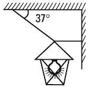
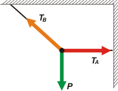

NO ME SALEN
EJERCICIOS RESUELTOS DE FÍSICA DEL CBC
|
|

|
NMS 1.5- Un farol de 3,6 kg permanece en reposo,
colgado como se indica en la figura. Determinar
la fuerza que ejerce cada cuerda.
Este ejercicio es muy, pero muy sencillo. Se trata, obviamente, de un ejercicio de estática. Pero figura acá porque, como te explico en este apunte, la estática es un caso particular de la dinámica: aquel en el que la aceleración vale cero. Todo lo demás sigue igual. Tenemos que empezar por un DCL y luego aplicar la 2da. Ley de Newton: |
 |
|
ΣF = m a
cuando decimos que la sumatoria de todas las fuerzas que actúan sobre un cuerpo es igual al producto entre su masa y su aceleración, no necesariamente tenemos que estar hablando de un cuerpo voluminoso, masivo, regordete. Estamos hablando de casi cualquier cosa que se te ocurra, por ejemplo una molécula, un pedacito de soga, un nudo, un degupinoato de merdixongo.
Y cuando hablamos de producto entre masa y aceleración incluímos casos idiotas como que la masa valga cero, o la aceleración valga cero. Tan potente y versátil es esta ley del universo que aún en esas situaciones absurdas resulta útil y eficiente.
En este problema, por ejemplo, nos piden que encontremos los valores de las fuerzas que hacen las dos cuerdas. Qué mejor oportunidad que aplicarle la 2da ley al punto donde se reúnen esas tres fuerzas: el nudito arriba del farol. Pero un nudito... ¿qué masa tiene? ¿Qué cuerno es un nudito? NO IMPORTA. Mirá su DCL. |
|
|
|  |
Yo dibujé las tres fuerzas con el largo correcto. Eso no tiene mucha importancia. Lo que sí la tiene es que le pongas la dirección, y el sentido correcto, y un nombre razonable.
Del nudo todas tiran hacia afuera.
Como las fuerzas no son codireccionales, rehacemos el DCL, elegimos un sistema de referencia ¡y lo consignamos! Y descomponemos la fuerza que no coincide con las direcciones de DCL. |
|
|
| Acá repito el DCL. Con este vamos a operar. (Te recomiendo hacer como yo: cuando tengo que descomponer fuerzas, realizo un segundo DCL, en el que indico el SR). |
|
 |
ΣFx = m ax
TA — TBx = 0 → TA = TBx
ΣFy = m ay
TBy — P = 0 → TBy = P
Y si te fijás en cualquiera de los dos triángulos rectángulos que quedaron formados al lado de TB, acordarás conmigo en que: |
|
|
TBx = TB cos 37o
TBy = TB sen 37o
Metamos esto en las anteriores y obtenemos:
TB . sen 37o = P
TB = P / sen 37o
TB = 36 N / 0,6
|
Las barras de fracción han de dibujarse horizontales.
En NO ME SALEN aparecen oblicuas por las razones explicadas
acá. |
|
|
|
TA = TB cos 37o
TA = 60 N . 0,8
|
|
|
|
|
|
| |
|
 |
| DESAFIO: ¿Cuánto valdrían las fuerzas de las cuerdas si la masa del farol valiera 36 kg? |
|
Algunos derechos reservados.
Se permite su reproducción citando la fuente. Última actualización may-12. Buenos Aires, Argentina. |
|
|
|